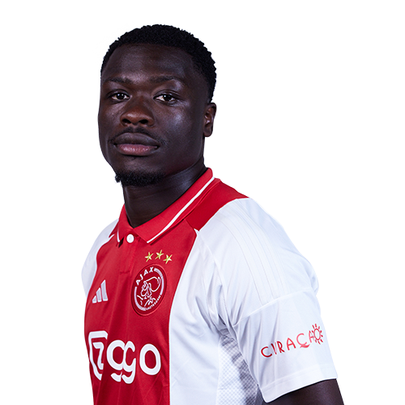

Brian Brobbey
Brian Brobbey doorliep de jeugdopleiding van Ajax. In oktober 2020 maakte hij in de Johan Cruijff ArenA zijn Eredivisie-debuut in Ajax 1 tegen Fortuna Sittard. In de met 5-2-gewonnen wedstrijd scoorde de spits direct. In de zomer van 2022 keerde Brobbey terug bij Ajax, nadat hij in 2021 naar RB Leipzig was vertrokken. De Ajacied trad in 2023 toe tot Ajax' Club van 100.
9
Volg Brobbey 